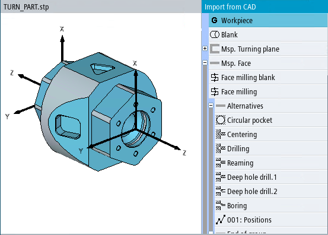

The 3D model of the workpiece and the suggested machining steps are displayed in the "Import from CAD" screen form.
In the following example, a workpiece is machined on a turning machine with counterspindle:
The content of the list of machine steps depends on the selected technology, the workpiece and workpiece zero. The selected machining step is highlighted in the 3D model.
Machining steps, which can be used to create the same model, are listed under "Alternatives".
If the turning machine is equipped with a counterspindle, a limit can be entered according to which the machining steps are distributed between the main spindle and counterspindle. This limit can be separately entered for inside and outside machining operations.
If the turning machine does not have a counterspindle, then all machining operations take place on the main spindle.
The following list contains all the important machining steps:
"Workpiece" machining step
Every machining step list starts with a "Workpiece" step. The zero point for the main and (if available) counterspindle can be defined in this step.
In this step, you can also manually add a plane, for example to create a contour in this plane.
Machining step "Main spindle blank"
In the "Main spindle blank" machining step, you can take the dimensions of the blank directly as blank step in a G code program (separately for main spindle and counterspindle).
For a ShopTurn program, the blank is written to the program header.
Before applying, you can adapt the values, e.g. in order to implement a blank allowance.
| Note |
In selection list "Blank" you can switch between the available blanks and select the appropriate blank. Values are provided that are appropriate for all blanks. |
"Main spindle turning plane" block
You can display the contour of the 3D model in block "Main spindle rotation plane", and using the right-hand mouse key, you can rotate through various positions and planes. All main spindle turning operations are executed here. This includes the contour, referred to the main spindle zero point, and possibly grooves, whose reference point lies in the area of the main spindle.
Block "Main spindle face" front/rear
All milling operations for the face side are listed in block "Main spindle face".
Block "Main spindle: Peripheral surface"
Under "Main spindle: Peripheral surface", all milling operations on the peripheral surface are listed whose orientation points outward. A separate block is created for each position on the peripheral surface. The angle specifies the rotation of the main spindle.
Block "Main spindle peripheral surface" inside
Under "Main spindle: Peripheral surface", all milling operations on the peripheral surface are listed whose orientation points inward. A separate block is created for each position on the peripheral surface. The angle specifies the rotation of the main spindle.
Block "Main spindle plane"
All other milling operations of the main spindle for an inclined plane are listed under "Main spindle plane" (only for turning machines equipped with B axis).
Machining step "Counterspindle blank"
In the "Counterspindle blank" machining step, you can take the dimensions of the blank directly as blank step in a G code program (separately for main spindle and counterspindle).
For a ShopTurn program, the blank is written to the program header.
Before applying, you can adapt the values, e.g. in order to implement a blank allowance.
Block "Counterspindle turning plane"
In block "Counterspindle: Turning plane", all turning operations of the counterspindle are listed. This includes the contour, referred to the counterspindle zero point, and possibly grooves, whose reference point lies in the area of the counterspindle.
Block "Counterspindle face"
All milling operations on the counterspindle for the face side are listed in block "Counterspindle face", whose orientation is aligned towards the front.
Block "Counterspindle face" rear
All milling operations on the counterspindle for the face side are listed in block "Counterspindle face", whose orientation is aligned towards the rear.
Block "Counterspindle peripheral surface"
In block "Counterspindle: Peripheral surface ", all milling operations on the peripheral surface are listed whose orientation points outward. A separate block is created for each position on the peripheral surface. The angle specifies the rotation of the counterspindle.
Block "Counterspindle peripheral surface" inner
In block "Counterspindle: Peripheral surface" inner, all milling operations on the peripheral surface are listed whose orientation points inward. A separate block is created for each position on the peripheral surface. The angle specifies the rotation of the counterspindle.
Block "Counterspindle plane"
The point of rotation for swivel plane is defined in block "Counter spindle plane".
On machines that can swivel, the molds are additionally distributed across planes. A separate block is created for each plane.
| Note |
The face machining plane corresponds to the X/Y plane (G17). The peripheral surface machining plane corresponds to the Y/Z plane (G19). |